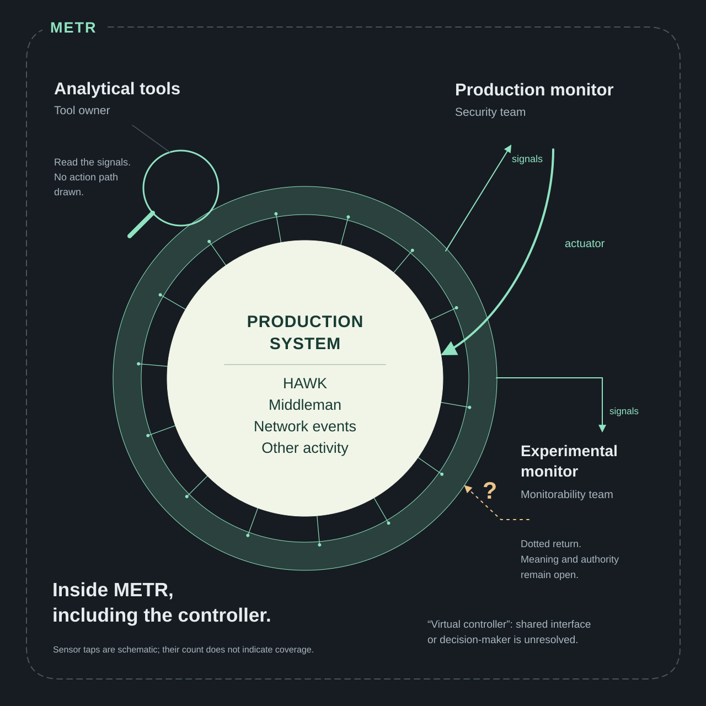

Full-canvas map
The object occupies the canvas. Names and uncertainties sit where they apply.

Start anywhere on the map and read by proximity and containment. There is no separate headline, legend panel or footer. The outer boundary and the production region remain distinct.
Text equivalent and limits
A METR perimeter encloses production, the shared signal surface and all consumers. The production region contains HAWK, Middleman, network events and other activity. Schematic sensor taps feed the shared surface. Analytical tools read without an action path drawn. The production monitor receives signals and has an actuator path to production. The experimental monitor receives signals and has a dotted return whose meaning and authority are open. The controller is within METR; virtual controller remains unresolved between shared interface and decision-maker. Sensor count and geometry do not encode coverage.
This approved static reference interprets a control-program proposal. It is calibration material, not a deployed system or factual input for another artifact.